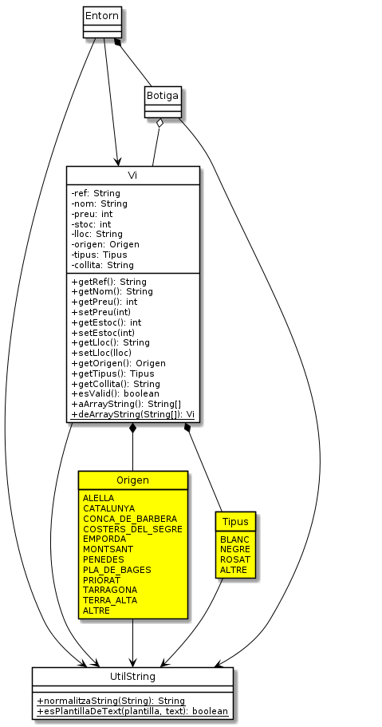

Exercici 05_11. El vi protegit¶
Exercici 05_11. El vi protegit¶
Context
Carpeta de lliurament:
05_11_viprotegit/Continguts relacionats: Enumerats
Com lliurar-lo: instruccions
[✓] Exercici amb autoavaluació
Enunciat
La nostra classe Vi per la botiga de la Sra. Estrella està molt
desprotegida.
Ens ha agradat la idea d’introduir el concepte de enum per protegir
algunes de les propietats de Vi.
En concret, el nostre objectiu és:

Els canvis consistiran en:
La denominació d’origen podrà ser: Penedès, Terra Alta, Catalunya, Tarragona, Conca de Barberà, Costers del Segre, Empordà, Montsant, Priorat, Alella, Pla de Bages, i altre.
El tipus de vi podrà ser: blanc, negre, rosat, i altre.
Els accents i altres «floritures» de la nostra llengua poden posar entrebancs a l’estructura
enumde Java. Considera el següent codi d’exemple, que permetria fer ús del mètodetoString()per a poder mostrar correctament un valor dels possibles origens:1 2 3 4 5 6 7 8 9 10 11 12 13 14 15 16
public enum Origen { PENEDES ("Penedès"), TERRA_ALTA ("Terra Alta"), /* … */ ALTRE ("altre"); private final String descr; Origen(String descr) { this.descr = descr; } @Override public String toString() { return descr; } }
Els dos enumerats oferiran el mètode estàtic
fromString(String)que funcionarà de la següent manera:si la cadena és
nullo buida o composada exclusivament d’espais, retornarànull.si la cadena indicada correspon al nom d’una de les variants conegudes, retornarà aquesta
si la cadena no correspon a cap de les conegudes, retornarà la variant
ALTRE.
retornarà la instància corresponent o bé
nullsi no hi ha cap entrada que correspongui al valor indicat, o bé aquesta siguinullo blanc. El valor a retornar serà el primer en ordre alfabètic, un cop normalitzat i ignorant majúscules, que es trobi que comenci pel valor donat.Així
Origen.fromString()retornaràCATALUNYAquan rebi"c", malgrat hi ha tres entrades que comencen amb C. RetornaràCONCA_DE_BARBERAen demanar-li"co"i, per descomptat, en demanar-li"Conca de Barberà".La signatura del constructor de
Vitambé queda modificada.Caldrà revisar altres canvis en mètodes de la classe
Vi, com ara els accessors, o els de serialització que, si bé no canviaran de signatura, sí que poden requerir adaptacions al cos.Donat que
normalitzaString()és requerit per entitats que no tenen tan a veure ambVi, mourem aquesta funció deViaUtilString.Afegirem a
UtilStringel mètodeboolean esPlantillaDeText(String plantilla, String text)que, donada una plantilla i un text, ens retorna cert si el text coincideix amb la plantilla.Considerarem que un text coincideix amb una plantilla quan, la seva versió normalitzada comença com la plantilla, o és igual.
Aquesta funció resoldrà als enumerats la decisió de si el nom correspon al demanat. Un cop la tenim, seria una llàstima no utilitzar-la també altres propietats de tipus String de la cerca. En concret, en el nom del vi.
En cas que la plantilla sigui
null, o buida o amb només espais, acceptarà qualsevol valor de text. Altrament acceptarà només els texts que comencin per la plantilla (ambdós normalitzats)El mètode
cercar(Vi)permetrà cercar parcialment els diferents atributs de tipus string. Per exempleRoura blancpodrà ser cercat perEls canvis també afectaran lleugerament a la classe
Entorn. Caldrà fer una ullada.